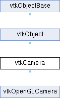

|
Etrek
|
|
Etrek
|
a virtual camera for 3D rendering More...
#include <vtkCamera.h>

Public Member Functions | |
| vtkTypeMacro (vtkCamera, vtkObject) | |
| void | PrintSelf (ostream &os, vtkIndent indent) override |
| void | OrthogonalizeViewUp () |
| void | SetDistance (double) |
| void | Dolly (double value) |
| void | Roll (double angle) |
| void | Azimuth (double angle) |
| void | Yaw (double angle) |
| void | Elevation (double angle) |
| void | Pitch (double angle) |
| void | Zoom (double factor) |
| void | SetObliqueAngles (double alpha, double beta) |
| void | ApplyTransform (vtkTransform *t) |
| void | GetEyePlaneNormal (double normal[3]) |
| virtual vtkMatrix4x4 * | GetModelViewTransformMatrix () |
| virtual vtkTransform * | GetModelViewTransformObject () |
| virtual vtkMatrix4x4 * | GetViewTransformMatrix () |
| virtual vtkTransform * | GetViewTransformObject () |
| virtual vtkMatrix4x4 * | GetProjectionTransformMatrix (double aspect, double nearz, double farz) |
| virtual vtkPerspectiveTransform * | GetProjectionTransformObject (double aspect, double nearz, double farz) |
| virtual vtkMatrix4x4 * | GetCompositeProjectionTransformMatrix (double aspect, double nearz, double farz) |
| virtual vtkMatrix4x4 * | GetProjectionTransformMatrix (vtkRenderer *ren) |
| virtual void | Render (vtkRenderer *) |
| vtkMTimeType | GetViewingRaysMTime () |
| void | ViewingRaysModified () |
| virtual void | GetFrustumPlanes (double aspect, double planes[24]) |
| void | ComputeViewPlaneNormal () |
| vtkMatrix4x4 * | GetCameraLightTransformMatrix () |
| virtual void | UpdateViewport (vtkRenderer *vtkNotUsed(ren)) |
| void | ShallowCopy (vtkCamera *source) |
| void | DeepCopy (vtkCamera *source) |
| void | SetPosition (double x, double y, double z) |
| void | SetPosition (const double a[3]) |
| vtkGetVector3Macro (Position, double) | |
| void | SetFocalPoint (double x, double y, double z) |
| void | SetFocalPoint (const double a[3]) |
| vtkGetVector3Macro (FocalPoint, double) | |
| void | SetViewUp (double vx, double vy, double vz) |
| void | SetViewUp (const double a[3]) |
| vtkGetVector3Macro (ViewUp, double) | |
| vtkGetMacro (Distance, double) | |
| vtkGetVector3Macro (DirectionOfProjection, double) | |
| void | SetRoll (double angle) |
| double | GetRoll () |
| void | SetParallelProjection (vtkTypeBool flag) |
| vtkGetMacro (ParallelProjection, vtkTypeBool) | |
| vtkBooleanMacro (ParallelProjection, vtkTypeBool) | |
| void | SetUseHorizontalViewAngle (vtkTypeBool flag) |
| vtkGetMacro (UseHorizontalViewAngle, vtkTypeBool) | |
| vtkBooleanMacro (UseHorizontalViewAngle, vtkTypeBool) | |
| void | SetViewAngle (double angle) |
| vtkGetMacro (ViewAngle, double) | |
| void | SetParallelScale (double scale) |
| vtkGetMacro (ParallelScale, double) | |
| void | SetClippingRange (double dNear, double dFar) |
| void | SetClippingRange (const double a[2]) |
| vtkGetVector2Macro (ClippingRange, double) | |
| void | SetThickness (double) |
| vtkGetMacro (Thickness, double) | |
| void | SetWindowCenter (double x, double y) |
| vtkGetVector2Macro (WindowCenter, double) | |
| vtkGetVector3Macro (ViewPlaneNormal, double) | |
| void | SetViewShear (double dxdz, double dydz, double center) |
| void | SetViewShear (double d[3]) |
| vtkGetVector3Macro (ViewShear, double) | |
| vtkSetMacro (EyeAngle, double) | |
| vtkGetMacro (EyeAngle, double) | |
| vtkSetMacro (FocalDisk, double) | |
| vtkGetMacro (FocalDisk, double) | |
| vtkSetMacro (FocalDistance, double) | |
| vtkGetMacro (FocalDistance, double) | |
| vtkSetMacro (UseOffAxisProjection, vtkTypeBool) | |
| vtkGetMacro (UseOffAxisProjection, vtkTypeBool) | |
| vtkBooleanMacro (UseOffAxisProjection, vtkTypeBool) | |
| double | GetOffAxisClippingAdjustment () |
| vtkSetVector3Macro (ScreenBottomLeft, double) | |
| vtkGetVector3Macro (ScreenBottomLeft, double) | |
| vtkSetVector3Macro (ScreenBottomRight, double) | |
| vtkGetVector3Macro (ScreenBottomRight, double) | |
| vtkSetVector3Macro (ScreenTopRight, double) | |
| vtkGetVector3Macro (ScreenTopRight, double) | |
| vtkSetMacro (EyeSeparation, double) | |
| vtkGetMacro (EyeSeparation, double) | |
| void | SetEyePosition (double eyePosition[3]) |
| void | GetEyePosition (double eyePosition[3]) |
| void | GetStereoEyePosition (double eyePosition[3]) |
| void | SetEyeTransformMatrix (vtkMatrix4x4 *matrix) |
| void | SetEyeTransformMatrix (const double elements[16]) |
| vtkGetObjectMacro (EyeTransformMatrix, vtkMatrix4x4) | |
| void | SetModelTransformMatrix (vtkMatrix4x4 *matrix) |
| void | SetModelTransformMatrix (const double elements[16]) |
| vtkGetObjectMacro (ModelTransformMatrix, vtkMatrix4x4) | |
| virtual void | SetExplicitProjectionTransformMatrix (vtkMatrix4x4 *) |
| vtkGetObjectMacro (ExplicitProjectionTransformMatrix, vtkMatrix4x4) | |
| vtkSetMacro (UseExplicitProjectionTransformMatrix, bool) | |
| vtkGetMacro (UseExplicitProjectionTransformMatrix, bool) | |
| vtkBooleanMacro (UseExplicitProjectionTransformMatrix, bool) | |
| vtkSetMacro (ExplicitAspectRatio, double) | |
| vtkGetMacro (ExplicitAspectRatio, double) | |
| vtkSetMacro (UseExplicitAspectRatio, bool) | |
| vtkGetMacro (UseExplicitAspectRatio, bool) | |
| vtkBooleanMacro (UseExplicitAspectRatio, bool) | |
| void | SetUserViewTransform (vtkHomogeneousTransform *transform) |
| vtkGetObjectMacro (UserViewTransform, vtkHomogeneousTransform) | |
| void | SetUserTransform (vtkHomogeneousTransform *transform) |
| vtkGetObjectMacro (UserTransform, vtkHomogeneousTransform) | |
| virtual void | UpdateIdealShiftScale (double aspect) |
| vtkGetVector3Macro (FocalPointShift, double) | |
| vtkGetMacro (FocalPointScale, double) | |
| vtkGetVector3Macro (NearPlaneShift, double) | |
| vtkGetMacro (NearPlaneScale, double) | |
| vtkSetMacro (ShiftScaleThreshold, double) | |
| vtkGetMacro (ShiftScaleThreshold, double) | |
| double * | GetOrientation () VTK_SIZEHINT(3) |
| double * | GetOrientationWXYZ () VTK_SIZEHINT(4) |
| vtkGetMacro (Stereo, int) | |
| vtkSetMacro (LeftEye, int) | |
| vtkGetMacro (LeftEye, int) | |
| vtkSetMacro (FreezeFocalPoint, bool) | |
| vtkGetMacro (FreezeFocalPoint, bool) | |
| vtkSetMacro (UseScissor, bool) | |
| vtkGetMacro (UseScissor, bool) | |
| void | SetScissorRect (vtkRecti scissorRect) |
| void | GetScissorRect (vtkRecti &scissorRect) |
| vtkGetObjectMacro (Information, vtkInformation) | |
| virtual void | SetInformation (vtkInformation *) |
| Public Member Functions inherited from vtkObject | |
| vtkBaseTypeMacro (vtkObject, vtkObjectBase) | |
| virtual void | DebugOn () |
| virtual void | DebugOff () |
| bool | GetDebug () |
| void | SetDebug (bool debugFlag) |
| virtual void | Modified () |
| virtual vtkMTimeType | GetMTime () |
| void | PrintSelf (ostream &os, vtkIndent indent) override |
| void | RemoveObserver (unsigned long tag) |
| void | RemoveObservers (unsigned long event) |
| void | RemoveObservers (const char *event) |
| void | RemoveAllObservers () |
| vtkTypeBool | HasObserver (unsigned long event) |
| vtkTypeBool | HasObserver (const char *event) |
| vtkTypeBool | InvokeEvent (unsigned long event) |
| vtkTypeBool | InvokeEvent (const char *event) |
| std::string | GetObjectDescription () const override |
| unsigned long | AddObserver (unsigned long event, vtkCommand *, float priority=0.0f) |
| unsigned long | AddObserver (const char *event, vtkCommand *, float priority=0.0f) |
| vtkCommand * | GetCommand (unsigned long tag) |
| void | RemoveObserver (vtkCommand *) |
| void | RemoveObservers (unsigned long event, vtkCommand *) |
| void | RemoveObservers (const char *event, vtkCommand *) |
| vtkTypeBool | HasObserver (unsigned long event, vtkCommand *) |
| vtkTypeBool | HasObserver (const char *event, vtkCommand *) |
| template<class U, class T> | |
| unsigned long | AddObserver (unsigned long event, U observer, void(T::*callback)(), float priority=0.0f) |
| template<class U, class T> | |
| unsigned long | AddObserver (unsigned long event, U observer, void(T::*callback)(vtkObject *, unsigned long, void *), float priority=0.0f) |
| template<class U, class T> | |
| unsigned long | AddObserver (unsigned long event, U observer, bool(T::*callback)(vtkObject *, unsigned long, void *), float priority=0.0f) |
| vtkTypeBool | InvokeEvent (unsigned long event, void *callData) |
| vtkTypeBool | InvokeEvent (const char *event, void *callData) |
| virtual void | SetObjectName (const std::string &objectName) |
| virtual std::string | GetObjectName () const |
| Public Member Functions inherited from vtkObjectBase | |
| const char * | GetClassName () const |
| virtual vtkTypeBool | IsA (const char *name) |
| virtual vtkIdType | GetNumberOfGenerationsFromBase (const char *name) |
| virtual void | Delete () |
| virtual void | FastDelete () |
| void | InitializeObjectBase () |
| void | Print (ostream &os) |
| void | Register (vtkObjectBase *o) |
| virtual void | UnRegister (vtkObjectBase *o) |
| int | GetReferenceCount () |
| void | SetReferenceCount (int) |
| bool | GetIsInMemkind () const |
| virtual void | PrintHeader (ostream &os, vtkIndent indent) |
| virtual void | PrintTrailer (ostream &os, vtkIndent indent) |
| virtual bool | UsesGarbageCollector () const |
Static Public Member Functions | |
| static vtkCamera * | New () |
| Static Public Member Functions inherited from vtkObject | |
| static vtkObject * | New () |
| static void | BreakOnError () |
| static void | SetGlobalWarningDisplay (vtkTypeBool val) |
| static void | GlobalWarningDisplayOn () |
| static void | GlobalWarningDisplayOff () |
| static vtkTypeBool | GetGlobalWarningDisplay () |
| Static Public Member Functions inherited from vtkObjectBase | |
| static vtkTypeBool | IsTypeOf (const char *name) |
| static vtkIdType | GetNumberOfGenerationsFromBaseType (const char *name) |
| static vtkObjectBase * | New () |
| static void | SetMemkindDirectory (const char *directoryname) |
| static bool | GetUsingMemkind () |
Protected Member Functions | |
| virtual void | ComputeProjectionTransform (double aspect, double nearz, double farz) |
| void | ComputeCompositeProjectionTransform (double aspect, double nearz, double farz) |
| void | ComputeCameraLightTransform () |
| void | ComputeScreenOrientationMatrix () |
| void | ComputeOffAxisProjectionFrustum () |
| void | ComputeModelViewMatrix () |
| void | PartialCopy (vtkCamera *source) |
| void | ComputeDistance () |
| virtual void | ComputeViewTransform () |
| Protected Member Functions inherited from vtkObject | |
| void | RegisterInternal (vtkObjectBase *, vtkTypeBool check) override |
| void | UnRegisterInternal (vtkObjectBase *, vtkTypeBool check) override |
| void | InternalGrabFocus (vtkCommand *mouseEvents, vtkCommand *keypressEvents=nullptr) |
| void | InternalReleaseFocus () |
| Protected Member Functions inherited from vtkObjectBase | |
| virtual void | ReportReferences (vtkGarbageCollector *) |
| vtkObjectBase (const vtkObjectBase &) | |
| void | operator= (const vtkObjectBase &) |
Protected Attributes | |
| double | WindowCenter [2] |
| double | ObliqueAngles [2] |
| double | FocalPoint [3] |
| double | Position [3] |
| double | ViewUp [3] |
| double | ViewAngle |
| double | ClippingRange [2] |
| double | EyeAngle |
| vtkTypeBool | ParallelProjection |
| double | ParallelScale |
| int | Stereo |
| int | LeftEye |
| double | Thickness |
| double | Distance |
| double | DirectionOfProjection [3] |
| double | ViewPlaneNormal [3] |
| double | ViewShear [3] |
| vtkTypeBool | UseHorizontalViewAngle |
| vtkTypeBool | UseOffAxisProjection |
| double | ScreenBottomLeft [3] |
| double | ScreenBottomRight [3] |
| double | ScreenTopRight [3] |
| double | ScreenCenter [3] |
| double | OffAxisClippingAdjustment |
| double | EyeSeparation |
| vtkMatrix4x4 * | EyeTransformMatrix |
| vtkMatrix4x4 * | ProjectionPlaneOrientationMatrix |
| vtkMatrix4x4 * | ModelTransformMatrix |
| vtkHomogeneousTransform * | UserTransform |
| vtkHomogeneousTransform * | UserViewTransform |
| vtkMatrix4x4 * | ExplicitProjectionTransformMatrix |
| bool | UseExplicitProjectionTransformMatrix |
| double | ExplicitAspectRatio |
| bool | UseExplicitAspectRatio |
| vtkTransform * | ViewTransform |
| vtkPerspectiveTransform * | ProjectionTransform |
| vtkPerspectiveTransform * | Transform |
| vtkTransform * | CameraLightTransform |
| vtkTransform * | ModelViewTransform |
| double | FocalDisk |
| double | FocalDistance |
| double | FocalPointShift [3] |
| double | FocalPointScale |
| double | NearPlaneShift [3] |
| double | NearPlaneScale |
| double | ShiftScaleThreshold |
| vtkCameraCallbackCommand * | UserViewTransformCallbackCommand |
| vtkTimeStamp | ViewingRaysMTime |
| bool | FreezeFocalPoint |
| bool | UseScissor |
| vtkRecti | ScissorRect |
| vtkInformation * | Information |
| Protected Attributes inherited from vtkObject | |
| bool | Debug |
| vtkTimeStamp | MTime |
| vtkSubjectHelper * | SubjectHelper |
| std::string | ObjectName |
| Protected Attributes inherited from vtkObjectBase | |
| std::atomic< int32_t > | ReferenceCount |
| vtkWeakPointerBase ** | WeakPointers |
Friends | |
| class | vtkCameraCallbackCommand |
Additional Inherited Members | |
| Static Protected Member Functions inherited from vtkObjectBase | |
| static vtkMallocingFunction | GetCurrentMallocFunction () |
| static vtkReallocingFunction | GetCurrentReallocFunction () |
| static vtkFreeingFunction | GetCurrentFreeFunction () |
| static vtkFreeingFunction | GetAlternateFreeFunction () |
a virtual camera for 3D rendering
vtkCamera is a virtual camera for 3D rendering. It provides methods to position and orient the view point and focal point. Convenience methods for moving about the focal point also are provided. More complex methods allow the manipulation of the computer graphics model including view up vector, clipping planes, and camera perspective.
| void vtkCamera::ApplyTransform | ( | vtkTransform * | t | ) |
Apply a transform to the camera. The camera position, focal-point, and view-up are re-calculated using the transform's matrix to multiply the old points by the new transform.
| void vtkCamera::Azimuth | ( | double | angle | ) |
Rotate the camera about the view up vector centered at the focal point. Note that the view up vector is whatever was set via SetViewUp, and is not necessarily perpendicular to the direction of projection. The result is a horizontal rotation of the camera.
|
protected |
These methods should only be used within vtkCamera.cxx.
|
protected |
These methods should only be used within vtkCamera.cxx.
|
protected |
Compute model view matrix for the camera.
|
protected |
Compute and use frustum using offaxis method.
|
protectedvirtual |
These methods should only be used within vtkCamera.cxx.
|
protected |
Given screen screen top, bottom left and top right calculate screen orientation.
| void vtkCamera::ComputeViewPlaneNormal | ( | ) |
This method is called automatically whenever necessary, it should never be used outside of vtkCamera.cxx.
| void vtkCamera::DeepCopy | ( | vtkCamera * | source | ) |
Copy the properties of source' into this'. Copy the contents of the matrices.
| void vtkCamera::Dolly | ( | double | value | ) |
Divide the camera's distance from the focal point by the given dolly value. Use a value greater than one to dolly-in toward the focal point, and use a value less than one to dolly-out away from the focal point.
| void vtkCamera::Elevation | ( | double | angle | ) |
Rotate the camera about the cross product of the negative of the direction of projection and the view up vector, using the focal point as the center of rotation. The result is a vertical rotation of the scene.
| vtkMatrix4x4 * vtkCamera::GetCameraLightTransformMatrix | ( | ) |
Returns a transformation matrix for a coordinate frame attached to the camera, where the camera is located at (0, 0, 1) looking at the focal point at (0, 0, 0), with up being (0, 1, 0).
|
virtual |
Return the concatenation of the ViewTransform and the ProjectionTransform. This transform will convert world coordinates to viewport coordinates. The 'aspect' is the width/height for the viewport, and the nearz and farz are the Z-buffer values that map to the near and far clipping planes. The viewport coordinates of a point located inside the frustum are in the range ([-1,+1],[-1,+1],[nearz,farz]). aspect is ignored if UseExplicitAspectRatio is true.
| void vtkCamera::GetEyePlaneNormal | ( | double | normal[3] | ) |
Get normal vector from eye to screen rotated by EyeTransformMatrix. This will be used only for offaxis frustum calculation.
|
virtual |
Get the plane equations that bound the view frustum. The plane normals point inward. The planes array contains six plane equations of the form (Ax+By+Cz+D=0), the first four values are (A,B,C,D) which repeats for each of the planes. The planes are given in the following order: -x,+x,-y,+y,-z,+z. Warning: it means left,right,bottom,top,far,near (NOT near,far) The aspect of the viewport is needed to correctly compute the planes. aspect is ignored if UseExplicitAspectRatio is true.
|
virtual |
Return the model view matrix of model view transform.
|
virtual |
Return the model view transform.
| double vtkCamera::GetOffAxisClippingAdjustment | ( | ) |
Get adjustment to clipping thickness, computed by camera based on the physical size of the screen and the direction to the tracked head/eye.
| double * vtkCamera::GetOrientation | ( | ) |
Get the orientation of the camera.
|
virtual |
Return the projection transform matrix, which converts from camera coordinates to viewport coordinates. The 'aspect' is the width/height for the viewport, and the nearz and farz are the Z-buffer values that map to the near and far clipping planes. The viewport coordinates of a point located inside the frustum are in the range ([-1,+1],[-1,+1],[nearz,farz]). aspect is ignored if UseExplicitAspectRatio is true.
|
virtual |
Return the projection transform matrix, which converts from camera coordinates to viewport coordinates. This method computes the aspect, nearz and farz, then calls the more specific signature of GetCompositeProjectionTransformMatrix
|
virtual |
Return the projection transform matrix, which converts from camera coordinates to viewport coordinates. The 'aspect' is the width/height for the viewport, and the nearz and farz are the Z-buffer values that map to the near and far clipping planes. The viewport coordinates of a point located inside the frustum are in the range ([-1,+1],[-1,+1],[nearz,farz]). aspect is ignored if UseExplicitAspectRatio is true.
| void vtkCamera::GetStereoEyePosition | ( | double | eyePosition[3] | ) |
Using the LeftEye property to determine whether left or right eye is being requested, this method computes and returns the position of the requested eye, taking head orientation and eye separation into account. The eyePosition parameter is output only, all elements are overwritten.
| vtkMTimeType vtkCamera::GetViewingRaysMTime | ( | ) |
Return the MTime that concerns recomputing the view rays of the camera.
|
virtual |
For backward compatibility. Use GetModelViewTransformMatrix() now. Return the matrix of the view transform. The ViewTransform depends on only three ivars: the Position, the FocalPoint, and the ViewUp vector. All the other methods are there simply for the sake of the users' convenience.
|
virtual |
For backward compatibility. Use GetModelViewTransformObject() now. Return the view transform. If the camera's ModelTransformMatrix is identity then the ViewTransform depends on only three ivars: the Position, the FocalPoint, and the ViewUp vector. All the other methods are there simply for the sake of the users' convenience.
|
static |
Construct camera instance with its focal point at the origin, and position=(0,0,1). The view up is along the y-axis, view angle is 30 degrees, and the clipping range is (.1,1000).
| void vtkCamera::OrthogonalizeViewUp | ( | ) |
Recompute the ViewUp vector to force it to be perpendicular to camera->focalpoint vector. Unless you are going to use Yaw or Azimuth on the camera, there is no need to do this.
|
protected |
Copy the ivars. Do nothing for the matrices. Called by ShallowCopy() and DeepCopy()
| void vtkCamera::Pitch | ( | double | angle | ) |
Rotate the focal point about the cross product of the view up vector and the direction of projection, using the camera's position as the center of rotation. The result is a vertical rotation of the camera.
|
overridevirtual |
Methods invoked by print to print information about the object including superclasses. Typically not called by the user (use Print() instead) but used in the hierarchical print process to combine the output of several classes.
Reimplemented from vtkObjectBase.
Reimplemented in vtkOpenGLCamera.
|
inlinevirtual |
This method causes the camera to set up whatever is required for viewing the scene. This is actually handled by an subclass of vtkCamera, which is created through New()
Reimplemented in vtkOpenGLCamera.
| void vtkCamera::Roll | ( | double | angle | ) |
Rotate the camera about the direction of projection. This will spin the camera about its axis.
| void vtkCamera::SetClippingRange | ( | double | dNear, |
| double | dFar ) |
Set/Get the location of the near and far clipping planes along the direction of projection. Both of these values must be positive. How the clipping planes are set can have a large impact on how well z-buffering works. In particular the front clipping plane can make a very big difference. Setting it to 0.01 when it really could be 1.0 can have a big impact on your z-buffer resolution farther away. The default clipping range is (0.1,1000). Clipping distance is measured in world coordinate unless a scale factor exists in camera's ModelTransformMatrix.
| void vtkCamera::SetDistance | ( | double | ) |
Move the focal point so that it is the specified distance from the camera position. This distance must be positive.
|
virtual |
Set/get an explicit 4x4 projection matrix to use, rather than computing one from other state variables. Only used when UseExplicitProjectionTransformMatrix is true.
| void vtkCamera::SetEyePosition | ( | double | eyePosition[3] | ) |
Set/Get the eye position (center point between two eyes). This is a convenience function that sets the translation component of EyeTransformMatrix. This will be used only for offaxis frustum calculation.
| void vtkCamera::SetEyeTransformMatrix | ( | vtkMatrix4x4 * | matrix | ) |
Set/Get eye transformation matrix. This is the transformation matrix for the point between eyes. This will be used only for offaxis frustum calculation. Default is identity.
| void vtkCamera::SetFocalPoint | ( | double | x, |
| double | y, | ||
| double | z ) |
Set/Get the focal of the camera in world coordinates. The default focal point is the origin.
| void vtkCamera::SetModelTransformMatrix | ( | vtkMatrix4x4 * | matrix | ) |
Set/Get model transformation matrix. This matrix could be used for model related transformations such as scale, shear, rotations and translations.
| void vtkCamera::SetObliqueAngles | ( | double | alpha, |
| double | beta ) |
Get/Set the oblique viewing angles. The first angle, alpha, is the angle (measured from the horizontal) that rays along the direction of projection will follow once projected onto the 2D screen. The second angle, beta, is the angle between the view plane and the direction of projection. This creates a shear transform x' = x + dz*cos(alpha)/tan(beta), y' = dz*sin(alpha)/tan(beta) where dz is the distance of the point from the focal plane. The angles are (45,90) by default. Oblique projections commonly use (30,63.435).
| void vtkCamera::SetParallelProjection | ( | vtkTypeBool | flag | ) |
Set/Get the value of the ParallelProjection instance variable. This determines if the camera should do a perspective or parallel projection.
| void vtkCamera::SetParallelScale | ( | double | scale | ) |
Set/Get the scaling used for a parallel projection, i.e. the half of the height of the viewport in world-coordinate distances. The default is 1. Note that the "scale" parameter works as an "inverse scale" — larger numbers produce smaller images. This method has no effect in perspective projection mode.
| void vtkCamera::SetPosition | ( | double | x, |
| double | y, | ||
| double | z ) |
Set/Get the position of the camera in world coordinates. The default position is (0,0,1).
| void vtkCamera::SetRoll | ( | double | angle | ) |
Set the roll angle of the camera about the direction of projection.
| void vtkCamera::SetThickness | ( | double | ) |
Set the distance between clipping planes. This method adjusts the far clipping plane to be set a distance 'thickness' beyond the near clipping plane.
| void vtkCamera::SetUseHorizontalViewAngle | ( | vtkTypeBool | flag | ) |
Set/Get the value of the UseHorizontalViewAngle instance variable. If set, the camera's view angle represents a horizontal view angle, rather than the default vertical view angle. This is useful if the application uses a display device which whose specs indicate a particular horizontal view angle, or if the application varies the window height but wants to keep the perspective transform unchanges.
| void vtkCamera::SetUserTransform | ( | vtkHomogeneousTransform * | transform | ) |
In addition to the instance variables such as position and orientation, you can add an additional transformation for your own use. This transformation is concatenated to the camera's ProjectionTransform
| void vtkCamera::SetUserViewTransform | ( | vtkHomogeneousTransform * | transform | ) |
In addition to the instance variables such as position and orientation, you can add an additional transformation for your own use. This transformation is concatenated to the camera's ViewTransform
| void vtkCamera::SetViewAngle | ( | double | angle | ) |
Set/Get the camera view angle, which is the angular height of the camera view measured in degrees. The default angle is 30 degrees. This method has no effect in parallel projection mode. The formula for setting the angle up for perfect perspective viewing is: angle = 2*atan((h/2)/d) where h is the height of the RenderWindow (measured by holding a ruler up to your screen) and d is the distance from your eyes to the screen.
| void vtkCamera::SetViewShear | ( | double | dxdz, |
| double | dydz, | ||
| double | center ) |
Set/get the shear transform of the viewing frustum. Parameters are dx/dz, dy/dz, and center. center is a factor that describes where to shear around. The distance dshear from the camera where no shear occurs is given by (dshear = center * FocalDistance).
| void vtkCamera::SetViewUp | ( | double | vx, |
| double | vy, | ||
| double | vz ) |
Set/Get the view up direction for the camera. The default is (0,1,0).
| void vtkCamera::SetWindowCenter | ( | double | x, |
| double | y ) |
Set/Get the center of the window in viewport coordinates. The viewport coordinate range is ([-1,+1],[-1,+1]). This method is for if you have one window which consists of several viewports, or if you have several screens which you want to act together as one large screen.
| void vtkCamera::ShallowCopy | ( | vtkCamera * | source | ) |
Copy the properties of source' into this'. Copy pointers of matrices.
|
virtual |
The following methods are used to support view dependent methods for normalizing data (typically point coordinates). When dealing with data that can exceed floating point resolution sometimes is it best to normalize that data based on the current camera view such that what is seen will be in the sweet spot for floating point resolution. Input datasets may be double precision but the rendering engine is currently single precision which also can lead to these issues. See vtkOpenGLVertexBufferObject for related information.
|
inlinevirtual |
Update the viewport
| void vtkCamera::ViewingRaysModified | ( | ) |
Mark that something has changed which requires the view rays to be recomputed.
| vtkCamera::vtkGetMacro | ( | Distance | , |
| double | ) |
Return the distance from the camera position to the focal point. This distance is positive.
| vtkCamera::vtkGetMacro | ( | Stereo | , |
| int | ) |
Get the stereo setting
| vtkCamera::vtkGetObjectMacro | ( | Information | , |
| vtkInformation | ) |
Set/Get the information object associated with this camera.
| vtkCamera::vtkGetVector3Macro | ( | DirectionOfProjection | , |
| double | ) |
Get the vector in the direction from the camera position to the focal point. This is usually the opposite of the ViewPlaneNormal, the vector perpendicular to the screen, unless the view is oblique.
| vtkCamera::vtkGetVector3Macro | ( | ViewPlaneNormal | , |
| double | ) |
Get the ViewPlaneNormal. This vector will point opposite to the direction of projection, unless you have created a sheared output view using SetViewShear/SetObliqueAngles.
| vtkCamera::vtkSetMacro | ( | ExplicitAspectRatio | , |
| double | ) |
Set/get an explicit aspect to use, rather than computing it from the renderer. Only used when UseExplicitAspect is true.
| vtkCamera::vtkSetMacro | ( | EyeAngle | , |
| double | ) |
Set/Get the separation between eyes (in degrees). This is used when generating stereo images.
| vtkCamera::vtkSetMacro | ( | EyeSeparation | , |
| double | ) |
Set/Get distance between the eyes. This will be used only for offaxis frustum calculation. Default is 0.06.
| vtkCamera::vtkSetMacro | ( | FocalDisk | , |
| double | ) |
Set the size of the cameras lens in world coordinates. This is only used when the renderer is doing focal depth rendering. When that is being done the size of the focal disk will effect how significant the depth effects will be.
| vtkCamera::vtkSetMacro | ( | FocalDistance | , |
| double | ) |
Sets the distance at which rendering is in focus. This is currently only used by the ray tracing renderers. 0 (default) disables ray traced depth of field. Not to be confused with FocalPoint that is the camera target and is centered on screen. Using a separate focal distance property enables out-of-focus areas anywhere on screen.
| vtkCamera::vtkSetMacro | ( | FreezeFocalPoint | , |
| bool | ) |
Set/Get the value of the FreezeDolly instance variable. This determines if the camera should move the focal point with the camera position. HACK!!!
| vtkCamera::vtkSetMacro | ( | LeftEye | , |
| int | ) |
Set the Left Eye setting
| vtkCamera::vtkSetMacro | ( | UseExplicitAspectRatio | , |
| bool | ) |
If true, the ExplicitAspect is used for the projection transformation, rather than computing it from the renderer. Default is false.
| vtkCamera::vtkSetMacro | ( | UseExplicitProjectionTransformMatrix | , |
| bool | ) |
If true, the ExplicitProjectionTransformMatrix is used for the projection transformation, rather than computing a transform from internal state.
| vtkCamera::vtkSetMacro | ( | UseOffAxisProjection | , |
| vtkTypeBool | ) |
Set/Get use offaxis frustum. OffAxis frustum is used for off-axis frustum calculations specifically for head-tracking with stereo rendering. For reference see "Generalized Perspective Projection" by Robert Kooima, 2008.
| vtkCamera::vtkSetMacro | ( | UseScissor | , |
| bool | ) |
Enable/Disable the scissor
| vtkCamera::vtkSetVector3Macro | ( | ScreenBottomLeft | , |
| double | ) |
Set/Get top left corner point of the screen. This will be used only for offaxis frustum calculation. Default is (-1.0, -1.0, -1.0).
| vtkCamera::vtkSetVector3Macro | ( | ScreenBottomRight | , |
| double | ) |
Set/Get bottom left corner point of the screen. This will be used only for offaxis frustum calculation. Default is (1.0, -1.0, -1.0).
| vtkCamera::vtkSetVector3Macro | ( | ScreenTopRight | , |
| double | ) |
Set/Get top right corner point of the screen. This will be used only for offaxis frustum calculation. Default is (1.0, 1.0, -1.0).
| void vtkCamera::Yaw | ( | double | angle | ) |
Rotate the focal point about the view up vector, using the camera's position as the center of rotation. Note that the view up vector is whatever was set via SetViewUp, and is not necessarily perpendicular to the direction of projection. The result is a horizontal rotation of the scene.
| void vtkCamera::Zoom | ( | double | factor | ) |
In perspective mode, decrease the view angle by the specified factor. In parallel mode, decrease the parallel scale by the specified factor. A value greater than 1 is a zoom-in, a value less than 1 is a zoom-out.